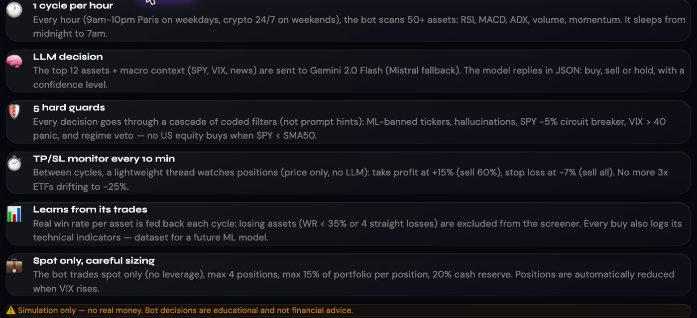
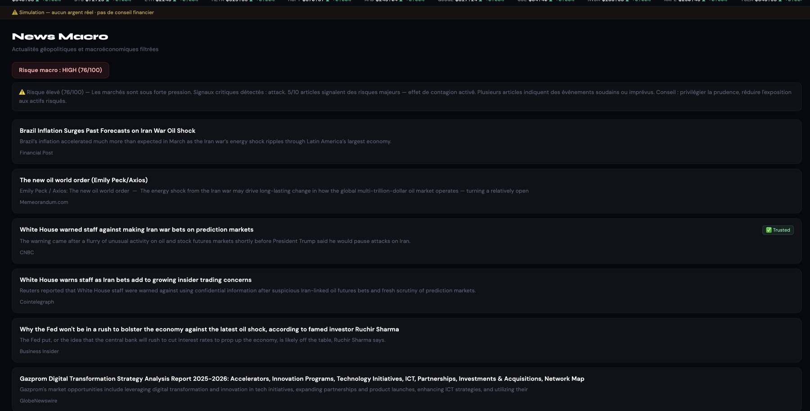
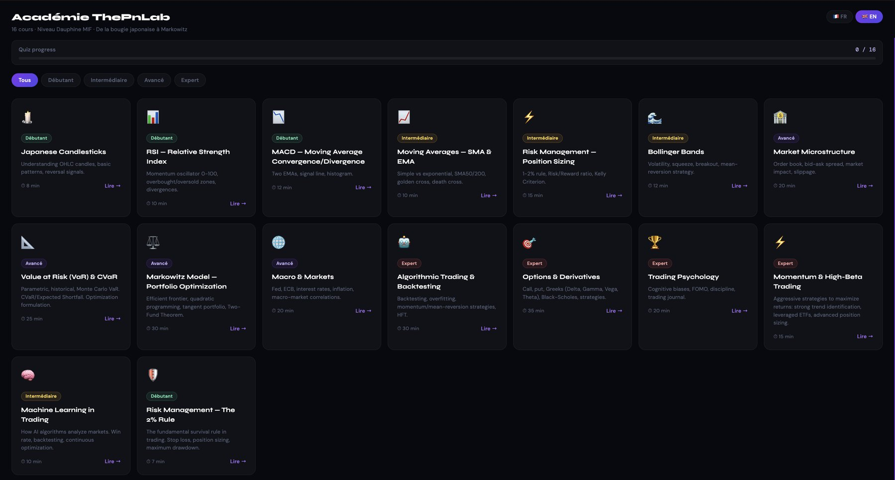

A paper-trading platform, 100% simulated, where an autonomous bot trades on a schedule and justifies each move in plain language. Designed, built, deployed and security-audited on my own.
A language model is good at reading context and explaining itself, not at respecting limits. So the LLM only proposes; every proposal then goes through rules written in code, not in the prompt.
Each asset gets points from eleven signals. The best bullish assets and a few bearish ones go to the model.
| Signal | Best case | Worst case |
|---|---|---|
| RSI in the 50–68 momentum zone / above 80 | +3.0 | −3.5 |
| MACD bullish / bearish | +3.5 | −2.5 |
| ADX trend strength ≥ 45 / below 18 | +3.5 | −1.5 |
| Volume surge above 4× / below 0.6× | +3.5 | −1.0 |
| 5-day momentum above +10% / below −10% | +2.5 | −2.5 |
| MACD histogram accelerating / decelerating | +2.0 | −2.0 |
| Price above / below its 50-day average | +1.5 | −1.0 |
| Bollinger: near lower / upper band | +1.5 | −1.0 |

News comes in from an API, ads and thin articles are dropped, trusted outlets are preferred, and the ten best articles are scored. The score tells the bot — and the user — how nervous the world is.

In March 2026 I had the platform audited for security and performance. Shipping a real system means its weaknesses are mine to find.
An Academy of 16 short courses with quizzes: risk management, VaR, portfolio optimization, backtesting — so users understand what the bot is doing.

Putting an AI in charge of decisions is easy. Making it safe means writing the limits in code, logging every choice, and letting someone else try to break it.
Paused, with a restart planned. 100% simulation: no real money, no financial advice.